Level Up! Dari Sadar Diri ke Sadar Desain
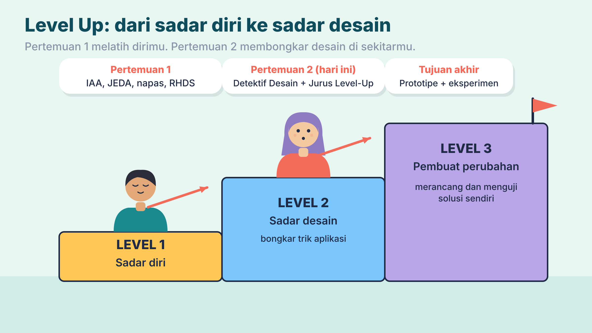
Di pertemuan lalu kamu sudah belajar mindfulness: hadir dengan sadar, punya niat (Intention), perhatian (Attention), dan sikap (Attitude). Kamu juga sudah mencoba tantangan 3 hari. Gimana rasanya? Kalau ada hari yang gagal, tenang saja. Itu normal banget.
Hari ini kita naik level. Kita tidak hanya bertanya "kenapa aku susah berhenti?", tetapi juga "apa sih yang bikin aplikasi susah ditinggalkan?" Kamu akan jadi detektif desain, peneliti mini, sekaligus perancang aplikasi.
1. Satu Video, Satu Jam Lebih
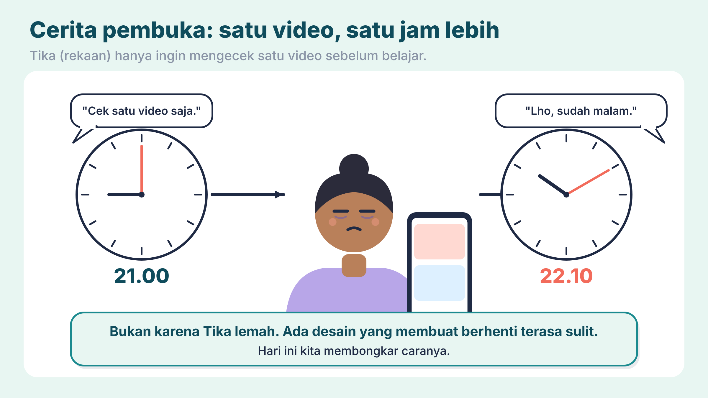
Tika duduk jam 21.00 sambil bilang, "Cek satu video saja." Tiba-tiba jam sudah 22.10. Tugasnya belum dibuka. Ia heran sendiri.
Apakah Tika lemah? Bukan. Ada rancangan di dalam aplikasi yang membuat berhenti terasa sulit. Dan rancangan itu bisa dikenali, dihitung, bahkan diperbaiki.
2. Perhatianmu Itu Berharga
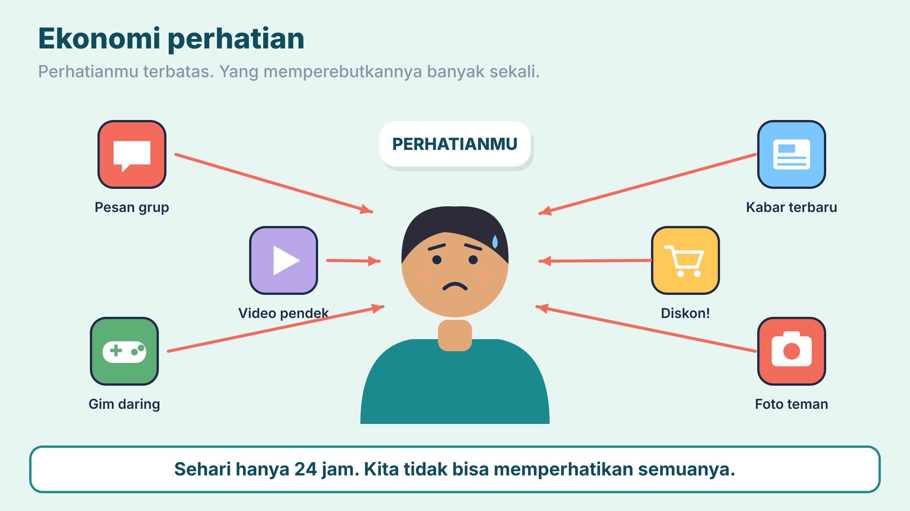
Perhatian manusia terbatas. Sementara itu, aplikasi, video, gim, dan kabar ada banyak sekali. Banyak layanan digital tidak kamu bayar dengan uang. Mereka hidup dari iklan atau data, jadi waktu dan perhatianmu punya nilai.
Ini disebut ekonomi perhatian. Bukan berarti semua aplikasi jahat. Banyak yang sangat membantu. Intinya: kepentingan pembuat aplikasi bisa berbeda dari kepentingan kita. Karena itu kita perlu sadar dan memilih.
3. Loop Kebiasaan: Pemicu, Aksi, Ganjaran
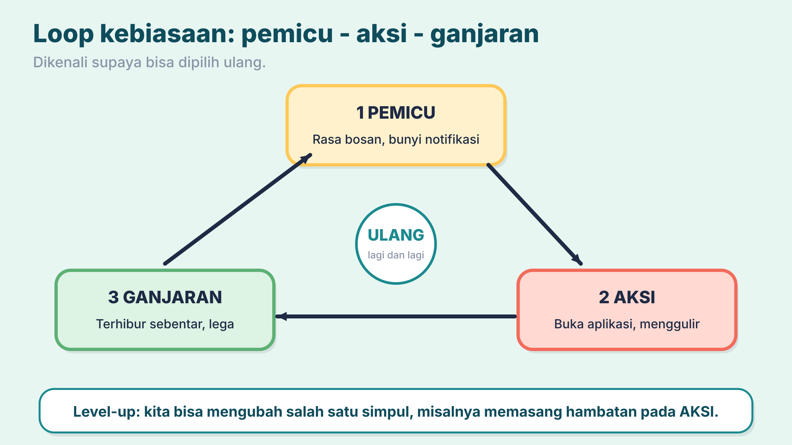
- Pemicu: yang membuatmu mulai. Contoh: bosan, bunyi notifikasi.
- Aksi: yang kamu lakukan. Contoh: membuka aplikasi dan menggulir.
- Ganjaran: yang terasa enak sesudahnya. Contoh: terhibur sebentar, lega.
Karena berulang-ulang, lingkaran ini jadi otomatis. Kabar baiknya: kita bisa mengubah satu simpul saja, misalnya memberi jeda sebelum aksi.
4. Pola 1: Gulir Tanpa Ujung dan Autoplay
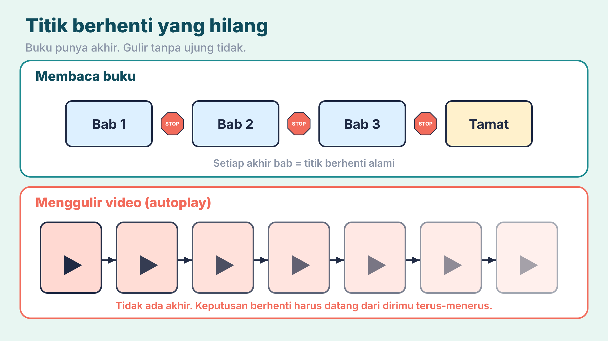
Saat membaca buku, ada titik berhenti alami: akhir bab. Saat menggulir video dengan autoplay, video berikutnya langsung diputar. Tidak ada akhir. Jadi kamu sendiri yang harus memutuskan berhenti, lagi dan lagi.
5. Pola 2: Notifikasi, Streak, dan Hadiah Acak
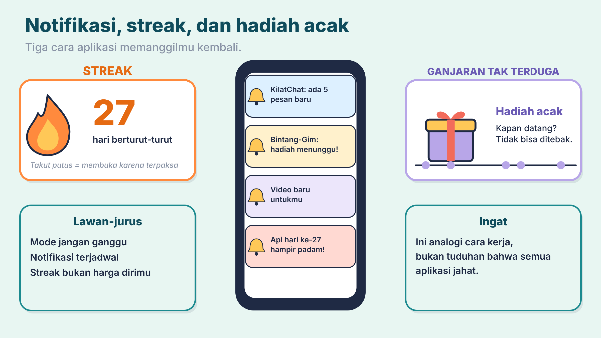
- Notifikasi adalah pemicu dari luar. Bunyinya bikin tangan refleks.
- Streak (api hari berturut-turut) bikin kita takut kehilangan yang sudah dikumpulkan.
- Hadiah acak muncul di waktu yang tidak bisa ditebak. Karena tidak tahu kapan datang, kita jadi sering mengecek "siapa tahu ada sekarang".
Analogi gampangnya seperti mesin kocok: tidak tahu kapan hadiahnya keluar, jadi terus dicoba. (Ini analogi cara kerja ya, bukan tuduhan bahwa semua aplikasi seperti itu.)
6. Hitung: Berapa Menit Fokusmu yang Hilang?
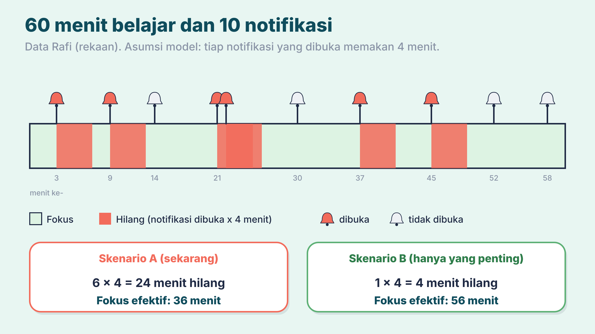
Misalkan setiap notifikasi yang dibuka memakan 4 menit (1 menit melihat + 3 menit untuk fokus lagi). Ingat: angka 4 menit ini hanya asumsi untuk latihan berhitung, bukan hasil penelitian. Tiap orang berbeda.
| Skenario | Hitungan | Menit fokus |
|---|---|---|
| A: semua notifikasi masuk | 6 dibuka x 4 = 24 menit hilang | 60 - 24 = 36 |
| B: hanya info penting (1 notifikasi) | 1 x 4 = 4 menit hilang | 60 - 4 = 56 |
Selisihnya 20 menit. Cuma dengan mengatur notifikasi. Coba kamu cari satu keterbatasan perhitungan ini.
7. Pola 3: Sorotan dan Bias Seleksi
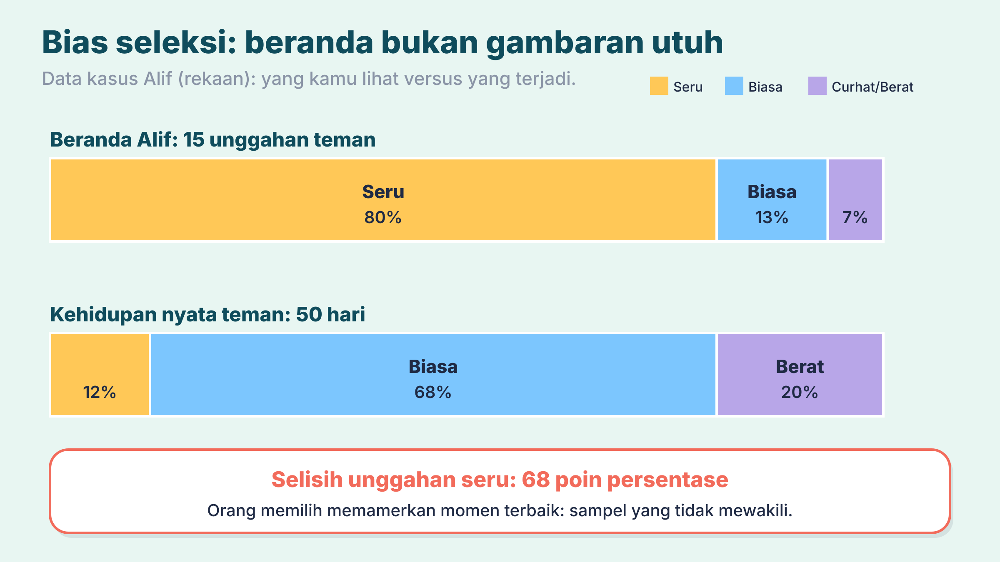
Orang cenderung mengunggah momen terbaiknya. Akibatnya beranda penuh liburan, prestasi, dan pesta. Pada kasus Alif (rekaan), 80% unggahan di berandanya adalah momen seru. Padahal di kehidupan nyata teman-temannya, hari yang seru hanya 12%.
Dalam pelajaran data ini disebut bias seleksi: sampel yang kamu lihat tidak mewakili keseluruhan. Jadi kalau kamu merasa minder, ingat dulu: aku sedang membandingkan hidupku yang utuh dengan sorotan orang lain.
8. Pola 4: Mesin Rekomendasi
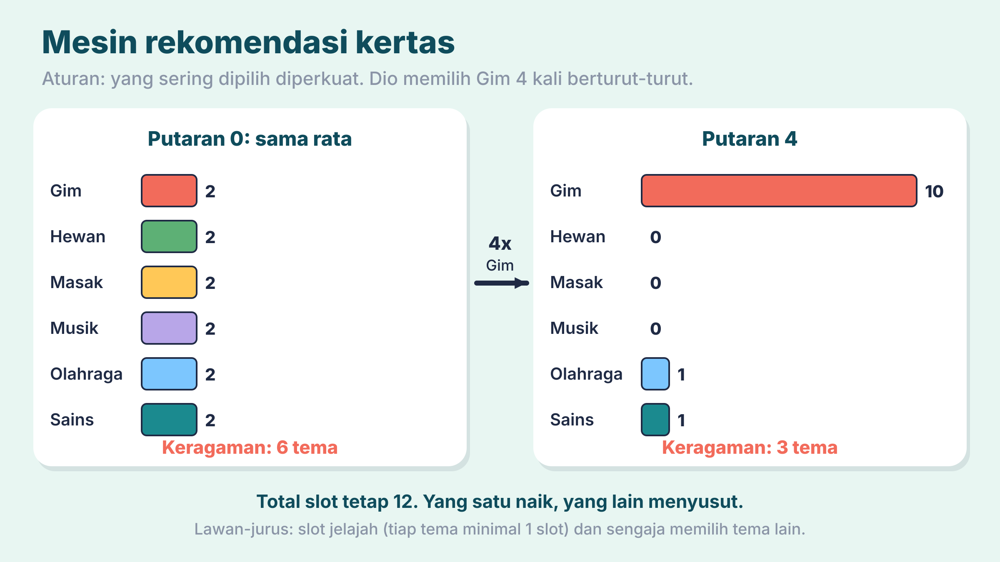
Aplikasi memakai algoritma rekomendasi, yaitu aturan komputer yang memilih apa yang tampil berikutnya. Aturan yang kita pakai di kelas sederhana: yang sering kamu pilih diperkuat.
- Feed berisi 12 slot, awalnya tiap tema 2 slot.
- Tiap putaran, penonton memilih satu tema.
- Tema pilihan +2 slot.
- 2 slot diambil dari tema lain yang paling banyak.
Setelah 4 putaran memilih Gim: Gim 10 slot dari 12. Tema lain hampir hilang. Inilah yang disebut gelembung filter. Mesinnya tidak jahat; ia hanya menjalankan aturan. Dan aturan itu bisa kita ubah, misalnya dengan slot jelajah (tiap tema minimal 1 slot).
9. Peta Empat Pola dan Lawan-Jurusnya
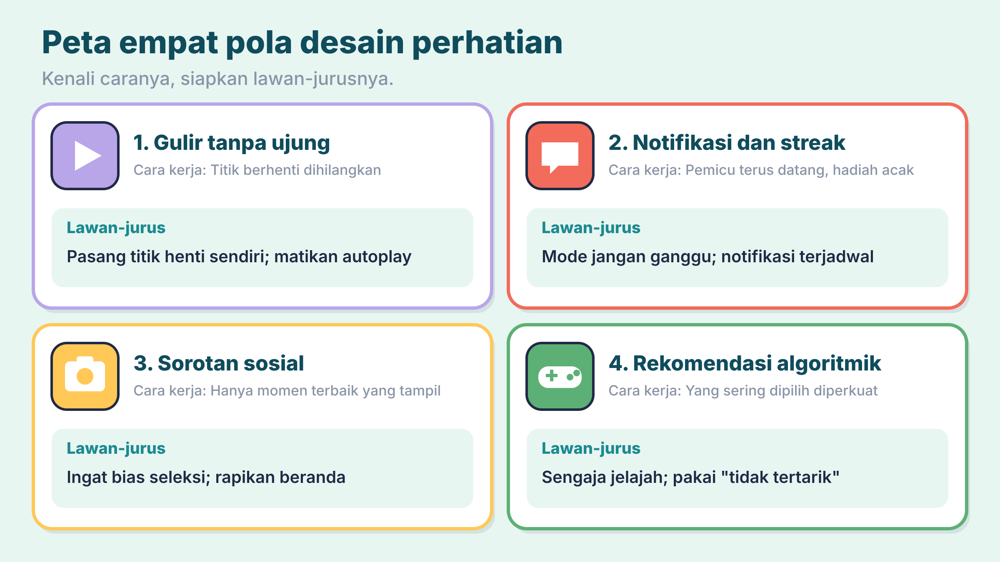
Keempat pola ini bisa muncul bersamaan dalam satu aplikasi. Tujuannya bukan membuatmu takut, tetapi waspada dan punya pilihan.
10. Jurus 1: Amati - Namai - Pilih
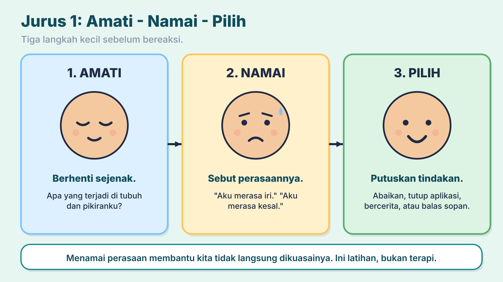
- Amati: berhenti sejenak. Apa yang terjadi di tubuh dan pikiranku?
- Namai: sebut perasaannya, misalnya "aku merasa iri" atau "aku kesal".
- Pilih: putuskan tindakan: abaikan, tutup aplikasi, bercerita, atau balas dengan sopan.
Menamai perasaan membantu kita tidak langsung dikuasai olehnya. Ini latihan ya, bukan terapi. Kalau terasa berat, ceritakan pada orang yang kamu percaya. (Amati-Namai-Pilih adalah istilah buatan guru.)
11. Jurus 2: Pasang Hambatan
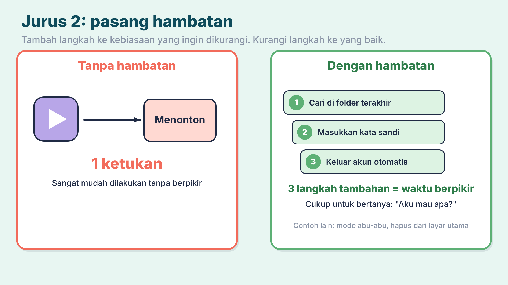
Semakin sedikit langkah, semakin gampang suatu kebiasaan terjadi. Jadi pasang hambatan (friction): hapus dari layar utama, simpan di folder paling belakang, keluar akun setiap selesai, atau pakai mode abu-abu. Langkah ekstra memberimu waktu bertanya, "Aku mau apa?"
Kebalikannya juga berlaku: permudah kebiasaan baik. Taruh buku di meja, bukan di tas.
12. Jurus 3: JIKA-MAKA yang Spesifik
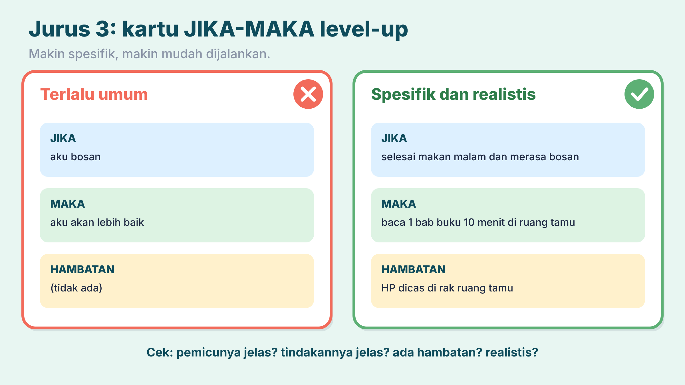
| Terlalu umum | Spesifik dan realistis |
|---|---|
| JIKA aku bosan, MAKA aku akan lebih baik. | JIKA selesai makan malam dan merasa bosan, MAKA aku membaca satu bab buku 10 menit di ruang tamu. Hambatan: HP dicas di rak ruang tamu. |
- Pemicunya jelas?
- Tindakannya jelas dan bisa dilakukan?
- Ada hambatan yang nyata?
- Realistis untuk hidupmu?
13. Jurus 4: Tata Lingkungan
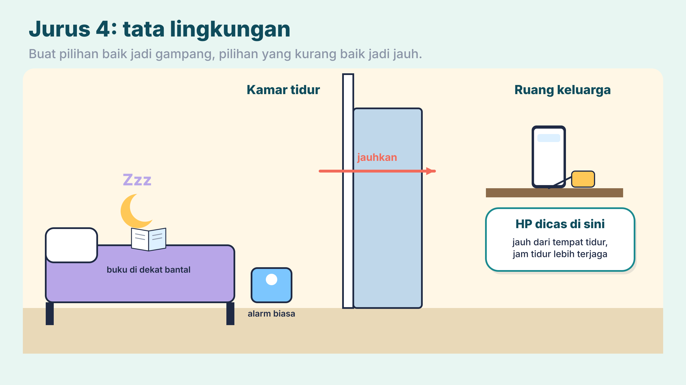
Lingkungan memberi isyarat. HP yang dicas di luar kamar lebih sulit digulir menjelang tidur. Buku di dekat bantal jadi pilihan yang gampang. Alarm biasa membuat HP tidak perlu ada di sebelahmu semalaman. Kalau kamu tidak punya kamar sendiri, cukup pilih satu tempat khusus HP.
14. Jadilah Peneliti Mini
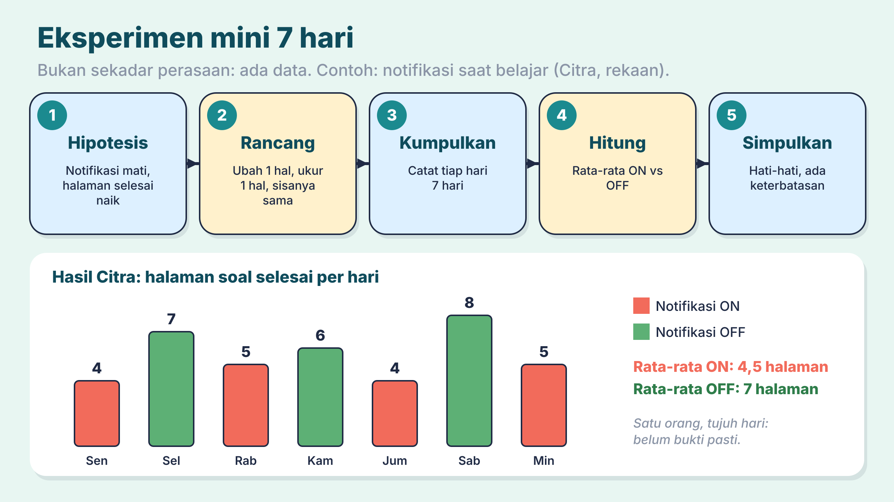
Citra (rekaan) menduga: kalau notifikasi dimatikan saat belajar, halaman yang selesai bertambah. Ia mencatat 7 hari. Hari ON (notifikasi menyala) rata-rata 4,5 halaman, hari OFF rata-rata 7 halaman.
| Istilah | Pada eksperimen Citra |
|---|---|
| Variabel bebas (yang diubah) | Notifikasi ON atau OFF |
| Variabel terikat (yang diukur) | Halaman yang selesai dan skor fokus |
| Variabel kontrol (dibuat sama) | Lama belajar 30 menit, tempat, jenis soal |
Kesimpulan yang jujur: pada pekan itu hari OFF cenderung lebih produktif bagi Citra. Tetapi ini satu orang, tujuh hari, dan hari Sabtu (OFF) adalah hari libur. Jadi belum bukti pasti.
15. Berjalan Bersamaan Belum Tentu Sebab-Akibat
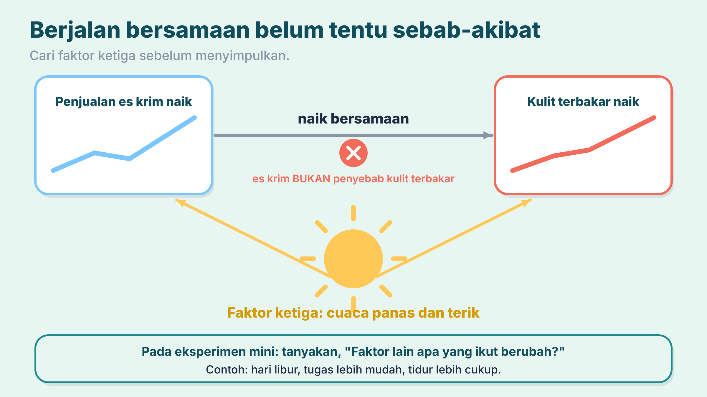
Penjualan es krim naik dan kulit terbakar juga naik. Apakah es krim membuat kulit terbakar? Tentu tidak. Faktor ketiganya cuaca panas dan terik. Saat menafsirkan datamu sendiri, selalu tanya: "Faktor lain apa yang ikut berubah?"
16. Prinsip RAMAH untuk Aplikasi yang Menghargai Penggunanya
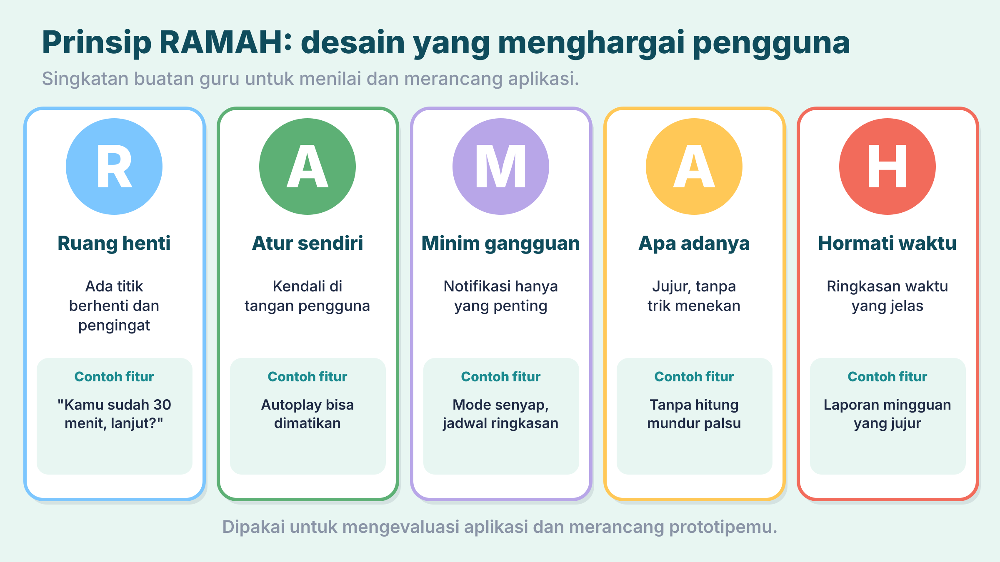
- Ruang henti: ada titik berhenti dan pengingat.
- Atur sendiri: kendali di tangan pengguna.
- Minim gangguan: notifikasi hanya yang penting.
- Apa adanya: jujur, tanpa trik menekan.
- Hormati waktu: ringkasan waktu yang jelas dan jujur.
Sekarang kamu bukan hanya pengguna. Kamu perancang. Di kelas kamu akan membuat prototipe kertas.
17. Prototipe Kertas
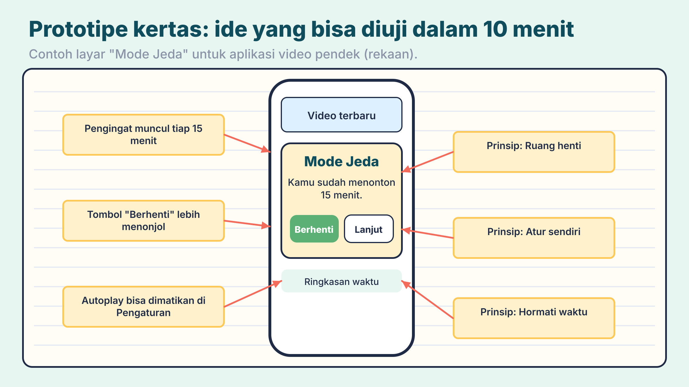
- Pilih jenis aplikasi (video pendek, pesan, atau gim).
- Gambar satu layar di kertas A4.
- Tambahkan minimal tiga fitur ramah perhatian dan beri label.
- Tulis prinsip RAMAH yang diterapkan.
- Pikirkan keberatan pembuat aplikasi dan jalan tengahnya.
Gambar tidak perlu bagus. Yang penting idenya jelas dan bisa diuji temanmu.
18. Debat Garis Opini dan Klaim-Bukti-Alasan
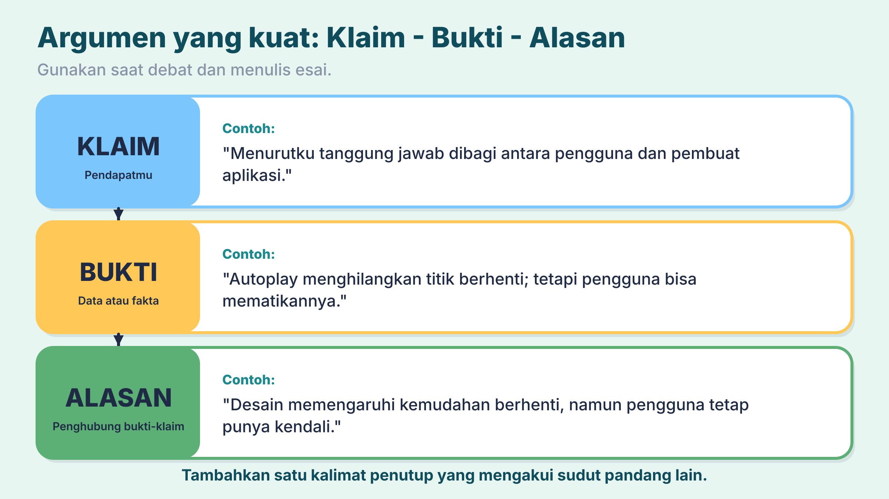
Pernyataan yang akan kita debatkan: "Waktu layar berlebihan sepenuhnya tanggung jawab pengguna, bukan pembuat aplikasi." Kamu boleh berpindah sudut setelah mendengar argumen yang meyakinkan. Itu tanda berpikir terbuka, bukan kalah.
- Klaim: pendapatmu.
- Bukti: data atau fakta.
- Alasan: kenapa bukti itu mendukung klaimmu.
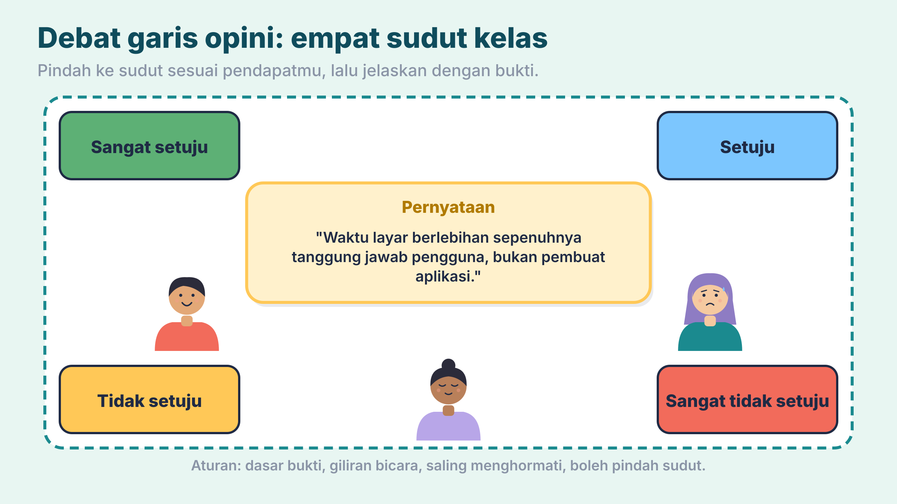
Cek Pemahaman
Pilih jawabanmu. Hasilnya langsung muncul. Boleh mengulang.
Rangkuman
- Perhatian terbatas dan diperebutkan banyak aplikasi (ekonomi perhatian).
- Kebiasaan berjalan dalam loop: pemicu - aksi - ganjaran.
- Empat pola desain: gulir tanpa ujung dan autoplay, notifikasi dan streak, sorotan sosial (bias seleksi), rekomendasi algoritmik.
- Empat jurus: Amati-Namai-Pilih, pasang hambatan, JIKA-MAKA spesifik, tata lingkungan.
- Eksperimen mini: variabel bebas, terikat, kontrol; kesimpulan hati-hati; korelasi bukan sebab.
- Prinsip RAMAH: Ruang henti, Atur sendiri, Minim gangguan, Apa adanya, Hormati waktu.
- Argumen kuat memakai Klaim - Bukti - Alasan.
Ayo, Refleksi!
Jawabanmu pribadi dan hanya tersimpan di layar ini (hilang saat halaman ditutup). Tulis di buku catatan juga, ya.
1. Pola desain mana yang paling sering kamu temui? Berikan contoh dari pengalamanmu (tanpa menyebut nama orang lain).
2. Jurus level-up mana yang akan kamu coba lebih dulu? Mengapa?
3. Apa yang berubah dari caramu memandang aplikasi di HP-mu setelah belajar hari ini?
4. Jika kamu pembuat aplikasi, fitur ramah apa yang akan kamu tambahkan, dan bagaimana kamu meyakinkan atasanmu?
Kata Kunci
| Istilah | Artinya |
|---|---|
| Ekonomi perhatian | Gagasan bahwa perhatian manusia terbatas dan menjadi sesuatu yang diperebutkan oleh banyak layanan. |
| Loop kebiasaan | Pola berulang: pemicu, aksi, ganjaran. |
| Pemicu | Hal yang mendorong kita bertindak, misalnya bunyi notifikasi atau rasa bosan. |
| Ganjaran tak terduga | Hadiah yang waktunya tidak bisa ditebak sehingga mendorong kita terus memeriksa. |
| Titik berhenti | Tanda alami bahwa suatu kegiatan sudah selesai, misalnya akhir bab. |
| Autoplay | Fitur yang otomatis memutar konten berikutnya. |
| Streak | Hitungan hari berturut-turut memakai suatu fitur. |
| Bias seleksi | Gambaran yang miring karena yang tampil hanya bagian terpilih, bukan keseluruhan. |
| Algoritma rekomendasi | Aturan komputer yang memilih konten untuk ditampilkan berdasarkan data perilaku. |
| Gelembung filter | Kondisi ketika rekomendasi membuat kita terus melihat hal yang mirip. |
| Hambatan (friction) | Langkah tambahan yang membuat suatu kebiasaan lebih sulit dilakukan. |
| Variabel bebas, terikat, kontrol | Yang diubah, yang diukur, dan yang dibuat sama dalam eksperimen. |
| Korelasi dan sebab | Dua hal yang berjalan bersamaan belum tentu yang satu menyebabkan yang lain. |
| Pola gelap (dark pattern) | Desain antarmuka yang menggiring pengguna memilih sesuatu lewat trik atau tekanan. |
| Prinsip RAMAH | Ruang henti, Atur sendiri, Minim gangguan, Apa adanya, Hormati waktu (singkatan buatan guru). |